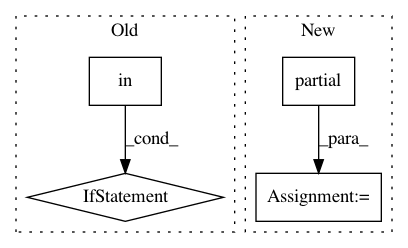

968c191e49c625337a09702347ebfbc8b85a9479,ilastik/applets/dataSelection/datasetInfoEditorWidget.py,DatasetInfoEditorWidget,accept,#DatasetInfoEditorWidget#,219
Before Change
if location == DatasetInfo.Location.ProjectInternal != info.location:
filepath = self.serializer.importStackAsLocalDataset(abs_paths=info.expanded_paths,
sequence_axis=info.sequenceAxis)
if location in (DatasetInfo.Location.FileSystemRelativePath, DatasetInfo.Location.FileSystemAbsolutePath):
new_full_paths = [Path(ep) / internal_path for ep in info.external_paths]
filepath = os.path.pathsep.join(str(path) for path in new_full_paths)
edited_info = DatasetInfo(
filepath=filepath,
project_file=self.serializer.topLevelOperator.ProjectFile.value,
sequence_axis=info.sequenceAxis,
After Change
project_inner_path = getattr(info, "inner_path", self.serializer.importStackAsLocalDataset(
abs_paths=info.expanded_paths, sequence_axis=info.sequence_axis
))
info_constructor = partial(ProjectInternalDatasetInfo, inner_path=project_inner_path)
else:
new_full_paths = [Path(ep) / internal_path for ep in info.external_paths]
info_constructor = partial(
new_info_class,
In pattern: SUPERPATTERN
Frequency: 3
Non-data size: 4
Instances
Project Name: ilastik/ilastik
Commit Name: 968c191e49c625337a09702347ebfbc8b85a9479
Time: 2019-08-19
Author: tomaz.vieira@embl.de
File Name: ilastik/applets/dataSelection/datasetInfoEditorWidget.py
Class Name: DatasetInfoEditorWidget
Method Name: accept
Project Name: tensorflow/hub
Commit Name: 81092be4e1e900473cd008fec50dc49c8af2eed9
Time: 2019-10-29
Author: no-reply@google.com
File Name: tensorflow_hub/keras_layer.py
Class Name: KerasLayer
Method Name: call
Project Name: EpistasisLab/tpot
Commit Name: 0106ae5a4c8eea209473fdae897062ab71a97e7e
Time: 2016-08-18
Author: supacoofoo@gmail.com
File Name: tpot/tpot.py
Class Name: TPOT
Method Name: __init__